И жители нашего региона все так же активно приходят, чтобы сделать свой выбор.…
И жители нашего региона все так же активно приходят, чтобы сделать свой выбор.…
НовостьПо данным источника
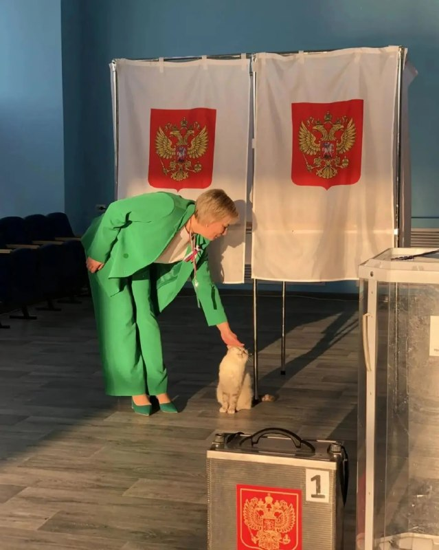
И жители нашего региона все так же активно приходят, чтобы сделать свой выбор.…


По данным участковых избирательных комиссий, свое согласие и участие в голосовании к этому часу уже выразили 506 807 жителей региона (55,24 %).
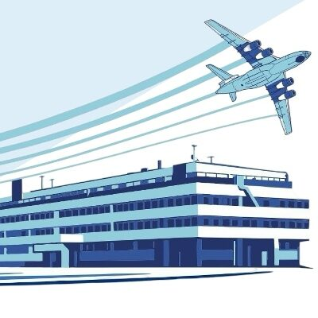
Мероприятие состоится 22 сентября в 14:00 в Торжественном зале Дворца книги. Вход свободный.…
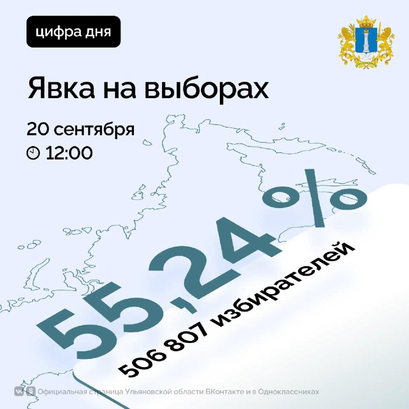
На 12.00 20 сентября проголосовало уже более 55,24% жителей Ульяновской области. 🇷🇺 Сегодня третий и последний день голосования.…
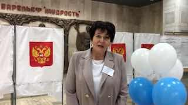
Особенно отмечает активность молодых людей, за ними — будущее нашей страны и региона!…

Подключайте быстрый и стабильный Most VPN и загружайте любые приложения.…
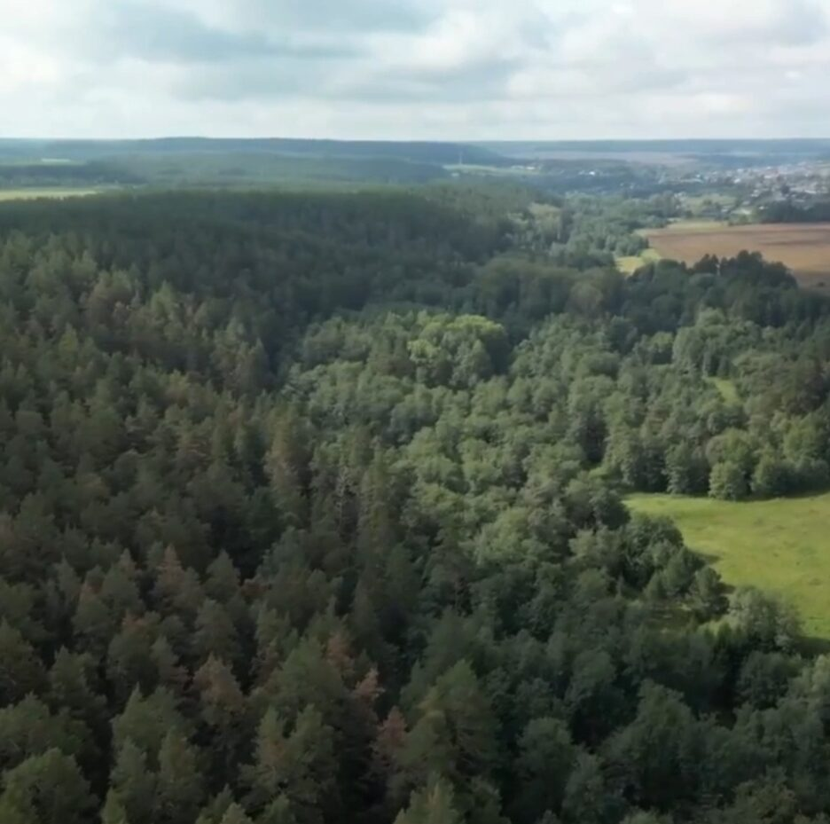
На заседании штаба по комплексному развитию региона 14 сентября губернатору Алексею Русских доложили о реализации национального проекта «Экологическое благополучие».…

На месте также зафиксированы техника и оборудование для работы с отходами.…

На этот период горячую воду временно отключат в Засвияжье, Ленинском районе, Новом городе и 3–4 микрорайонах.…

Предприниматели и региональный оператор «Экосистема» предоставили пять ломовозов и два погрузчика для уборки крупногабаритного мусора на контейнерных площадках.…

Ещё в 2024-м было наоборот (44% и 50%), в 2025-м — равенство (по 47%). Женщины выбирают самообслуживание чаще мужчин (59% против 51%).…
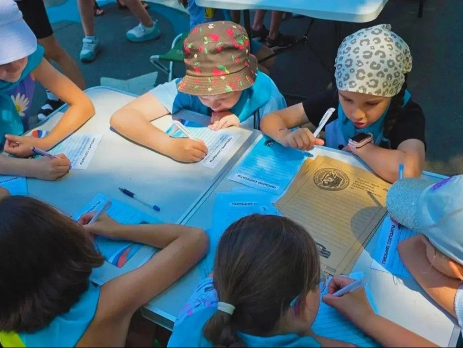


В управлении МЧС России по Ульяновской области подвели итоги минувших суток.…


После перехода по ней деньги улетают скамерам.
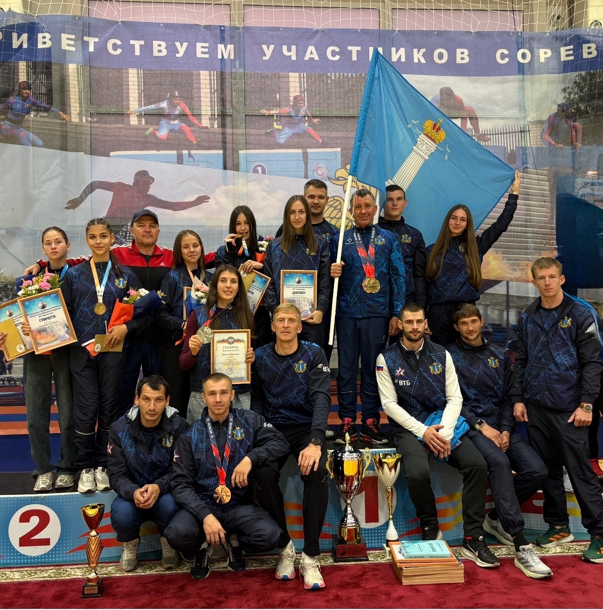
Максимчука». В упорной борьбе команда Ульяновской области заняла первое место в общекомандном зачете.…

«Серебро» у Республики Коми, «бронза» — у Смоленской области, сообщает Минспорт.…

Избиратели активно приходят на свои участки: для одних это уже традиция, а для других — первый опыт.…
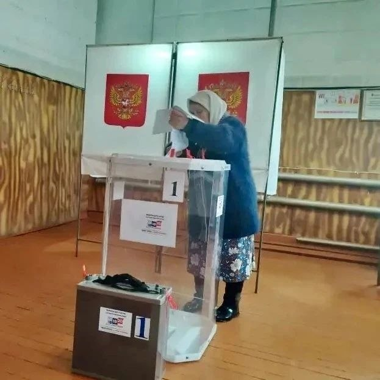
Особенно впечатляет пример 88-летней избирательницы: она приехала на участок на велосипеде, такой бодрости можно позавидовать!…
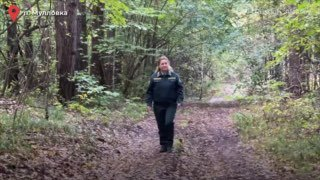
Алевтина Емельянова — участковый лесничий в Мулловке. Её бабушка и мама также связали свою жизнь с лесным хозяйством.…
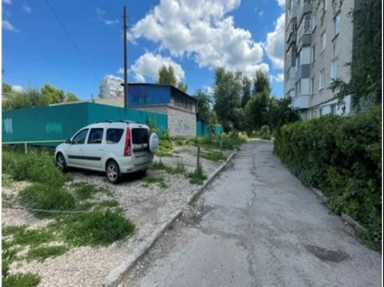
Уборка с городского пространства указанных объектов, блокирующих места парковки, будет выполнена поисково-спасательными службами с применением гидравлических ножниц.…
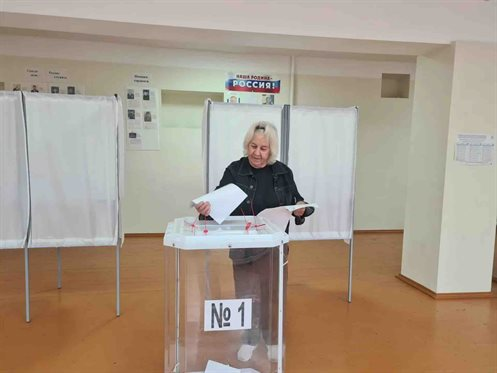
В воскресенье, 20 сентября, в регионе открылись все 904 избирательных участка. Они продолжат свою работу до 20:00.…
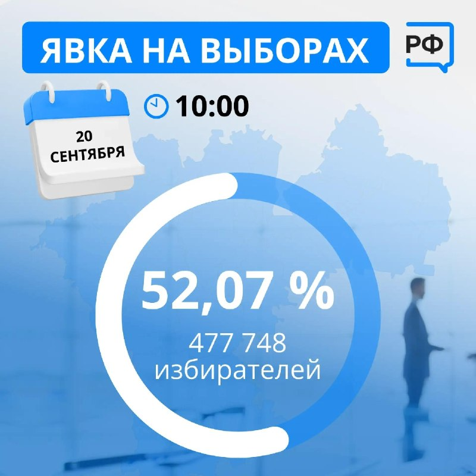
По данным регионального избиркома на 10:00 20 сентября явка на избирательных участках составила 52,07%.…

☑️ Фиксированная стоимость ☑️ Рассрочка 5 000 ₽ в месяц на 15 месяцев ☑️ Подача в суд через 2 недели Все внеплановые расходы оплачиваются Нашей компанией.…
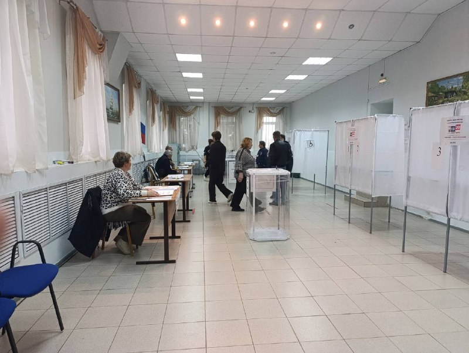
Сегодня, 20 сентября, избирательные участки вновь открыли свои двери для жителей Ульяновской области.…


Процесс включает смешивание ингредиентов, работу с пигментами и создание уникальных предметов интерьера и мебели. В цехе трудятся трое осуждённых.…

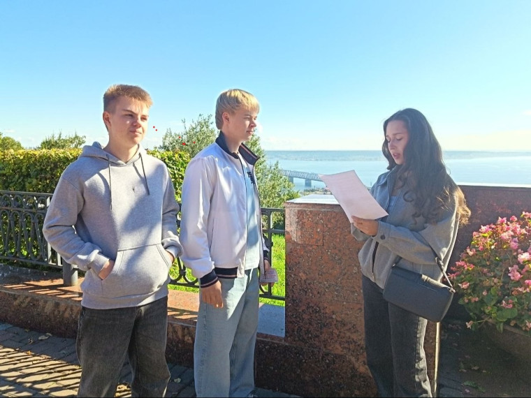
— Подобные инициативы являются частью нашей большой работы по сохранению самых важных ценностей: любви к родному краю и его истории, изучению и…

По сведениям избирательной комиссии, к 10:00 в голосовании приняли участие 477 748 человек, что составляет 52,07% от общего числа избирателей субъекта.…

По данным онлайн-табло, утром задержались рейсы компаний «Россия» и «Победа» — из Москвы в Ульяновск и в обратном направлении.…
В Ульяновске продолжаются осенние гидравлические испытания теплосетей.…
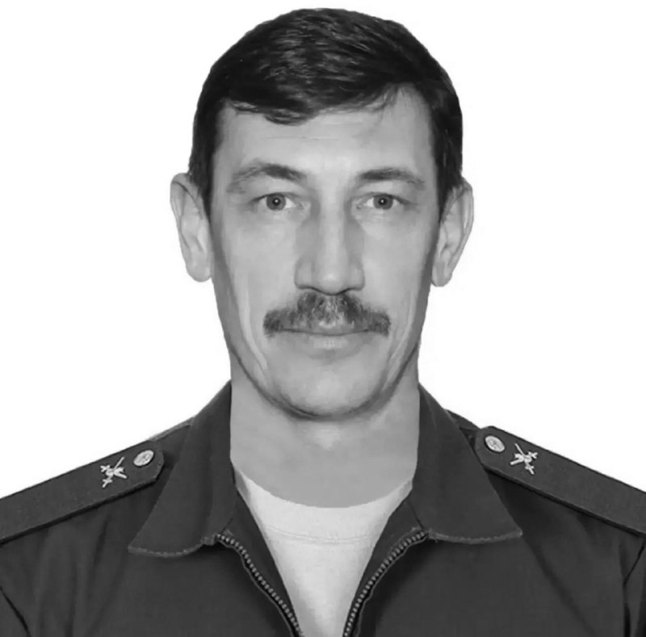
Ничего по этому фильтру в ленте нет — показать все материалы.
Возник 18.09, пик 18.09 — сюжет держали 8 источников. Полная дуга — в недельнике.